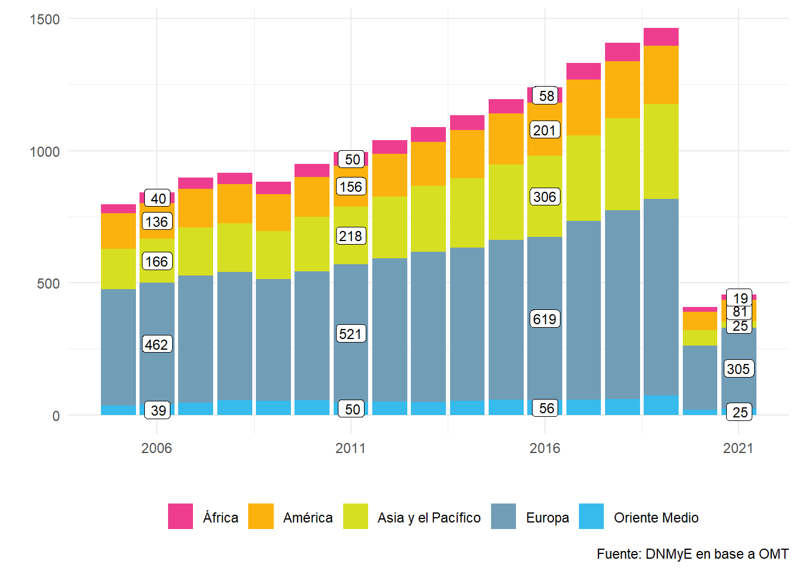
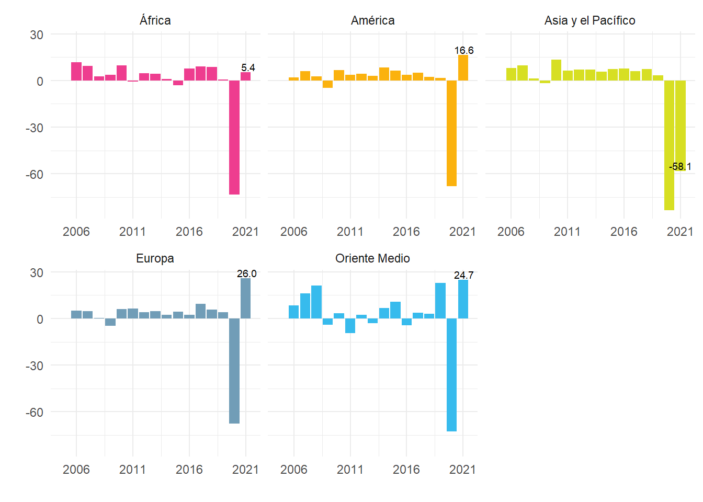
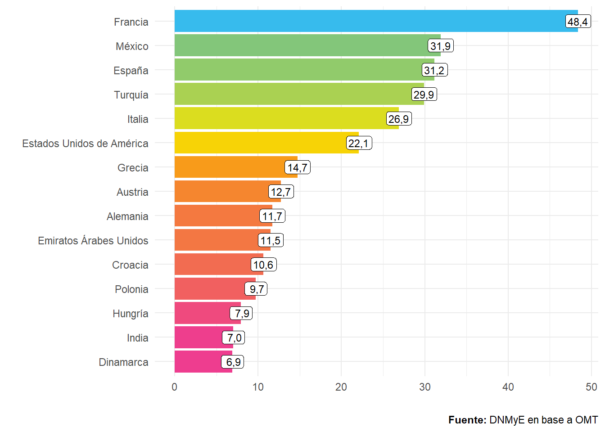
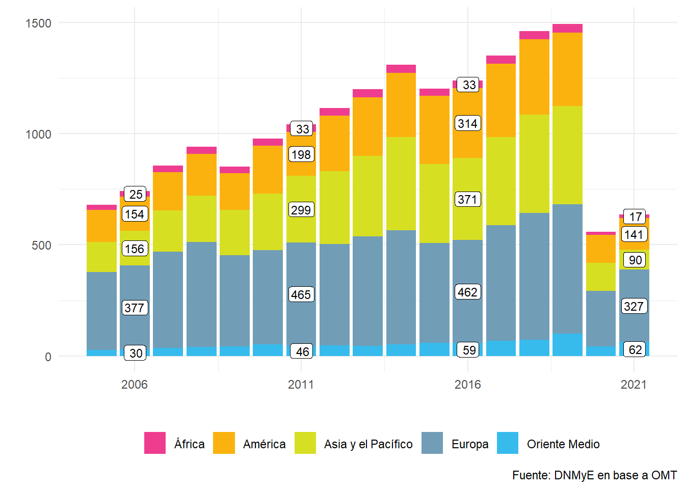
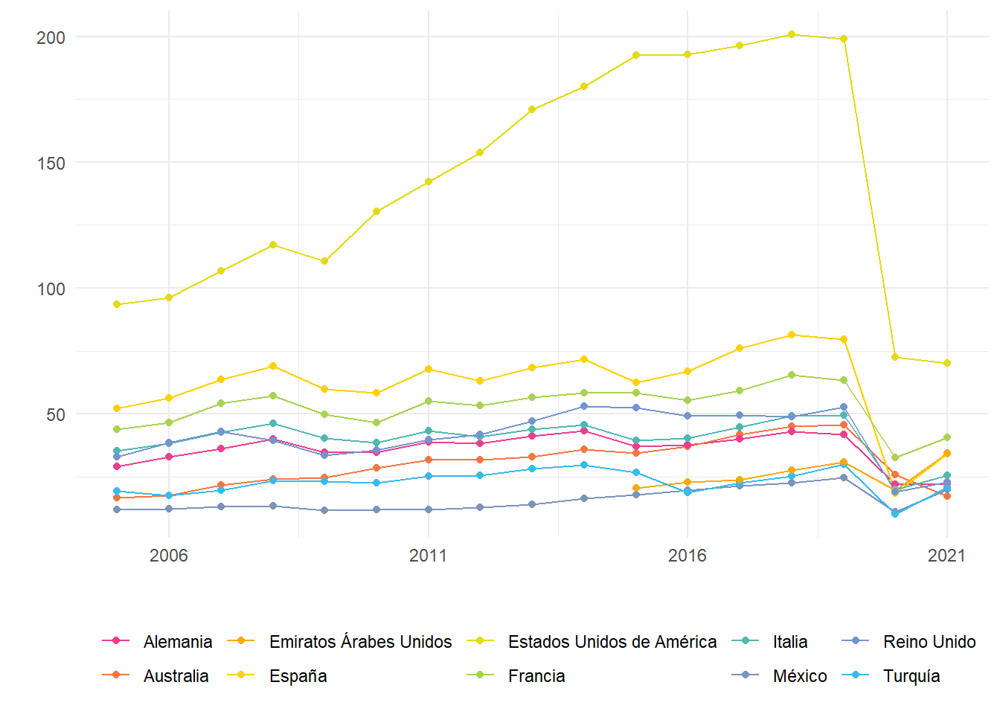
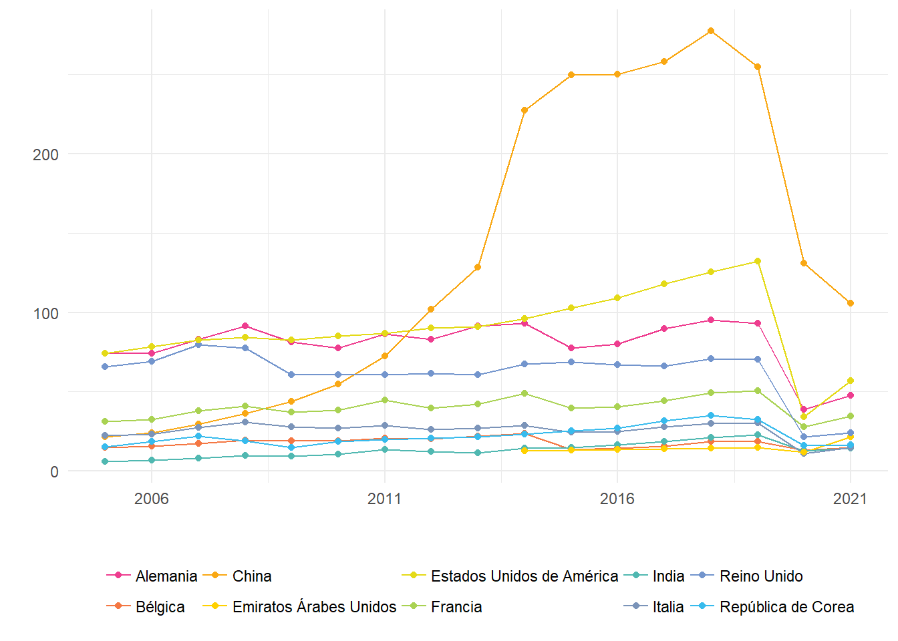
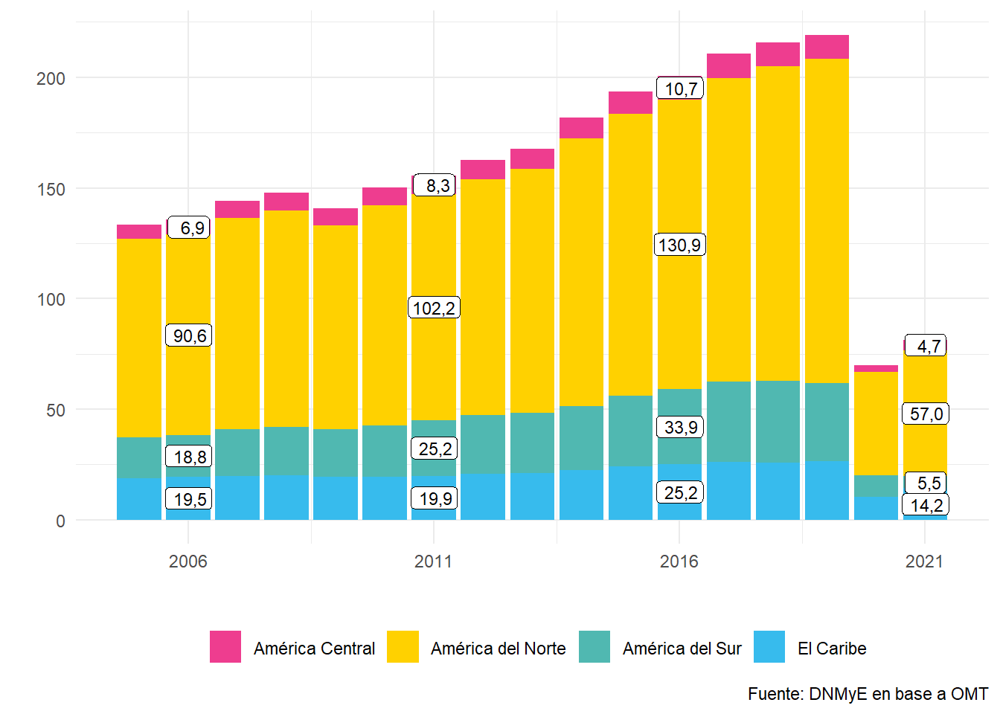
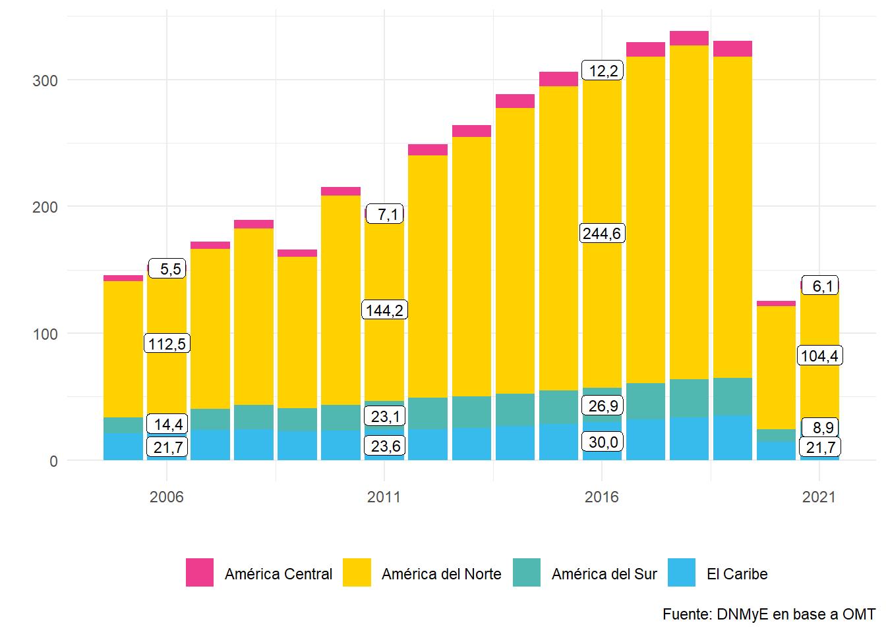
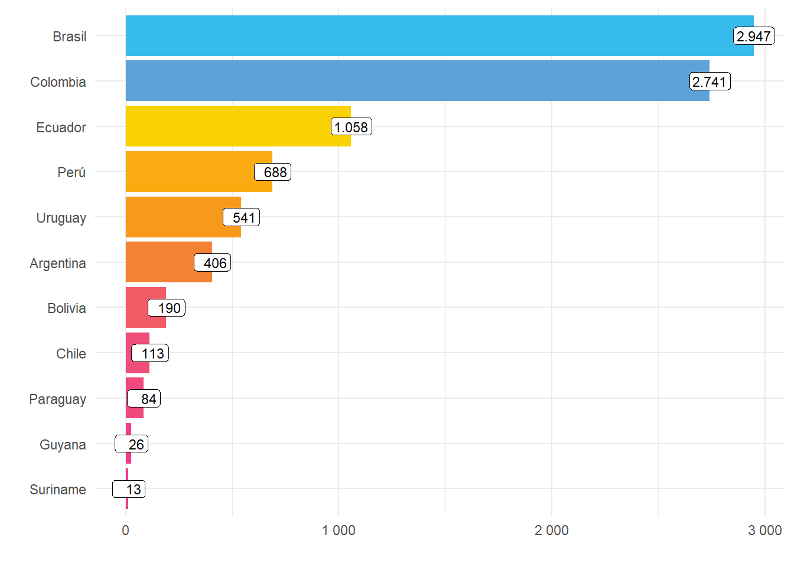

Capítulo 1 El Turismo en el Mundo
1.1 Introducción
Este capítulo presenta las principales estadísticas del turismo a nivel mundial. Con información de la Organización Mundial del Turismo (OMT), se incluyen los últimos datos disponibles acerca de las llegadas de turistas internacionales y los ingresos que estos generan en los países de destino, así como los principales países emisores de turistas y aquellos que más gasto generan por sus viajes. Se presentan estadísticas por región mundial y se profundiza en la región América y en América del Sur, en particular.
Es importante destacar que la información relativa al turismo internacional se presenta de distintas formas en los países. A modo de ejemplo, algunos países informan la cantidad de visitantes que visitan el país, es decir, se incluyen aquellas personas que pasan una noche en él (turistas) y aquellas que no lo hacen (excursionistas). Otros, en cambio, solo miden la cantidad de turistas (visitantes con pernocte). Un tercer grupo publica solamente estadísticas sobre aquellos turistas que visitan establecimientos turísticos colectivos. En el presente capítulo se procura mostrar la información correspondiente al total de turistas, es decir, visitantes que pernoctan.
Asimismo, es común encontrar, en las estadísticas por país, datos faltantes de algún país en particular, especialmente para el último año. Por otra parte, las mediciones más recientes pueden tener modificaciones en períodos posteriores.
1.2 Llegadas de turistas internacionales
En el año 2021 se estimaron 455 millones de turistas internacionales a nivel mundial. Representa un incremento del 11,2% respecto de 2020. En comparación con 2019, el valor estuvo un 68,9% por debajo.
Figura 1.1: Llegadas de turistas internacionales (en millones) y variación interanual. Años 2005-2021.

La apertura a nivel regional de las llegadas de turistas internacionales muestra que la región de Europa fue la más visitada, con 304,7 millones de turistas en el año 2021; en segundo lugar se encontró América, con 81,4 millones de turistas en el año; el tercer lugar lo ocupó Asia y el Pacífico, con 24,8 millones de turistas; la cuarta posición fue para Oriente Medio, con 24,7 millones; por último, la región de África recibió 19,4 millones.
Figura 1.2: Llegadas de turistas internacionales por región. En millones. Años 2005-2021.
Las llegadas de turistas internacionales se incrementaron un 26% interanual en Europa. En Oriente Medio, en tanto, aumentaron un 24,7%. La llegadas de turistas crecieron un 16,6% en la región América. África, por su parte, vio incrementadas sus llegadas de turistas en un 5,4%. La peor performance la tuvo Asia y el Pacífico, con una variación del -58,1 % respecto de 2020.
Figura 1.3: Variación interanual de las llegadas de turistas internacionales por región. Años 2005-2021.
A continuación se presenta una tabla con las llegadas de turistas internacionales para cada subregión dentro de las regiones antes mencionadas.
| 2000 | 2005 | 2010 | 2015 | 2020 | 2021 | ||||
|---|---|---|---|---|---|---|---|---|---|
| llegadas | Var. i.a. (%) | Var. % vs. 2019 | Participación (%) | ||||||
| Europa | |||||||||
| Europa del Norte | 43,7 | 57,3 | 62,8 | 69,8 | 23,3 | 21,0 | −9,9% | −74,9% | 4,6% |
| Europa Occidental | 139,7 | 141,7 | 154,4 | 181,5 | 83,5 | 87,7 | 5,0% | −57,2% | 19,3% |
| Eur. Central/Oriental | 69,4 | 87,5 | 98,9 | 122,4 | 46,7 | 57,2 | 22,5% | −62,3% | 12,6% |
| Eur. Meridional/Medit. | 140,8 | 153,0 | 173,3 | 231,4 | 88,3 | 138,7 | 57,1% | −54,4% | 30,5% |
| Asia y el Pacífico | |||||||||
| Asia del Nordeste | 58,4 | 85,9 | 111,5 | 142,1 | 20,3 | 11,2 | −44,8% | −93,4% | 2,5% |
| Asia del Sudeste | 35,6 | 48,5 | 70,5 | 104,2 | 25,5 | 2,9 | −88,6% | −97,9% | 0,6% |
| Oceanía | 9,2 | 11,0 | 11,4 | 14,3 | 3,6 | 0,8 | −77,8% | −95,4% | 0,2% |
| Asia Meridional | 6,1 | 8,1 | 12,1 | 23,5 | 9,8 | 9,9 | 1,0% | −70,7% | 2,2% |
| América | |||||||||
| América del Norte | 91,6 | 89,9 | 99,5 | 127,5 | 46,5 | 57,0 | 22,6% | −61,1% | 12,5% |
| El Caribe | 17,1 | 18,8 | 19,5 | 24,1 | 10,3 | 14,2 | 37,9% | −46,0% | 3,1% |
| América Central | 4,3 | 6,3 | 7,9 | 10,2 | 3,1 | 4,7 | 51,6% | −56,9% | 1,0% |
| América del Sur | 15,3 | 18,3 | 23,2 | 31,9 | 9,9 | 5,5 | −44,4% | −84,5% | 1,2% |
| África | |||||||||
| África del Norte | 10,2 | 13,9 | 19,7 | 18,0 | 5,6 | 6,6 | 17,9% | −74,2% | 1,5% |
| África Subsahariana | 17,7 | 21,5 | 30,7 | 35,6 | 12,9 | 12,7 | −1,6% | −70,6% | 2,8% |
| Oriente Medio | |||||||||
| Oriente Medio | 24,4 | 36,3 | 54,7 | 58,1 | 19,8 | 24,7 | 24,7% | −66,2% | 5,4% |
| Fuente: DNMyE en base a OMT | |||||||||
En el año 2021, el país con mayor cantidad de llegadas de turistas fue Francia, con 48,4 millones, seguido de México (31,9 millones), España (31,2 millones) y Turquía (29,9 millones).
Figura 1.4: Ranking de los 15 países que tuvieron mayor cantidad de turistas internacionales. Año 2021. Millones de turistas.
Las llegadas de turistas internacionales en Francia crecieron 16,1%. En comparación con 2019, la variación fue de -46,8%. El siguiente país en magnitud fue México, que aumentó sus llegadas un 28,5% con respecto a 2020 (-29,1% vs. 2019). Por su parte, las llegadas a España se elevaron un 64,7% (-62,7% vs. 2019).
| 2000 | 2005 | 2010 | 2015 | 2020 | 2021 | |||
|---|---|---|---|---|---|---|---|---|
| Llegadas | Var. i.a. (%) | Var. vs. 2019 (%) | ||||||
| Francia | 77,2 | 75,0 | 76,6 | 84,5 | 41,7 | 48,4 | 16,1% | −46,8% |
| México | 20,6 | 21,9 | 23,3 | 32,1 | 24,8 | 31,9 | 28,5% | −29,1% |
| España | 46,4 | 55,9 | 52,7 | 68,2 | 18,9 | 31,2 | 64,7% | −62,7% |
| Turquía | 9,6 | 20,3 | 31,4 | 39,5 | 15,9 | 29,9 | 88,3% | −41,5% |
| Italia | 41,2 | 36,5 | 43,6 | 50,7 | 25,2 | 26,9 | 6,7% | −58,3% |
| Estados Unidos de América | 51,2 | 49,2 | 60,0 | 77,8 | 19,2 | 22,1 | 15,0% | −72,2% |
| Grecia | 13,1 | 14,8 | 15,0 | 23,6 | 7,4 | 14,7 | 99,4% | −53,1% |
| Austria | 18,0 | 20,0 | 22,0 | 26,7 | 15,1 | 12,7 | −15,7% | −60,1% |
| Alemania | 19,0 | 21,5 | 26,9 | 35,0 | 12,4 | 11,7 | −6,1% | −70,5% |
| Emiratos Árabes Unidos | 3,9 | 7,1 | /// | 16,8 | 7,2 | 11,5 | 60,5% | −46,7% |
| Croacia | 5,8 | 7,7 | 9,1 | 12,7 | 5,5 | 10,6 | 91,9% | −38,7% |
| Polonia | 17,4 | 15,2 | 12,5 | 16,7 | 8,4 | 9,7 | 15,2% | −54,2% |
| Hungría | 3,0 | 10,0 | 9,5 | 14,3 | 7,4 | 7,9 | 6,9% | −53,2% |
| India | 2,6 | 3,9 | 5,8 | 13,3 | 6,3 | 7,0 | 10,6% | −60,9% |
| Dinamarca | 3,5 | 9,2 | 8,7 | 10,4 | 5,9 | 6,9 | 16,1% | −53,3% |
| Portugal | 12,1 | 10,6 | 6,8 | 11,7 | 4,2 | 6,3 | 50,8% | −63,3% |
| Reino Unido | 23,2 | 28,0 | 28,9 | 35,1 | 10,7 | 6,3 | −41,2% | −84,0% |
| Países Bajos | 10,0 | 10,0 | 10,9 | 15,0 | 7,3 | 6,2 | −14,7% | −69,2% |
| Albania | /// | /// | 2,2 | 3,8 | 2,6 | 5,5 | 111,8% | −10,0% |
| República Dominicana | 3,0 | 3,7 | 4,1 | 5,6 | 2,4 | 5,0 | 107,7% | −22,5% |
| Fuente: DNMyE en base a OMT | ||||||||
Figura 1.5: Llegadas de turistas internacionales. En millones. Primeros 10 países. Años 2005-2021.

1.3 Ingresos económicos
Los ingresos económicos por turismo internacional alcanzaron un total de 637 mil millones de dólares, con un aumento del 14% respecto de 2020. A su vez, estuvieron un 57,4% por debajo de 2019.
Figura 1.6: Ingresos por turismo internacional y variación interanual. Años 2005-2021.

A nivel regional, el mayor nivel de ingresos económicos se registró en Europa , con 326,7 mil millones de dólares en el año 2021 (31,1% respecto de 2020); en segundo lugar se encontró América, con 141,1 mil millones (12,5% interanual); el tercer lugar lo ocupó Asia y el Pacífico, con 89,8 mil millones (-28,8%); la cuarta posición fue para Oriente Medio, con 62,3 mil millones (43,2%); por último, la región de África recibió 17,2 mil millones (15,4%).
Figura 1.7: Ingresos por turismo internacional por región. En miles de millones de dólares. Años 2005-2021.
A continuación se presenta una tabla con los ingresos económicos por turismo internacional para cada subregión dentro de las regiones antes mencionadas.
| 2000 | 2005 | 2010 | 2015 | 2020 | 2021 | ||||
|---|---|---|---|---|---|---|---|---|---|
| Ingresos | Var. i.a. (%) | Var. % vs. 2019 | Participación (%) | ||||||
| Europa | |||||||||
| Europa del Norte | 36,1 | 53,6 | 61,6 | 77,4 | 41,0 | 50,8 | 23,9% | −46,6% | 8,0% |
| Europa Occidental | 83,7 | 123,2 | 152,4 | 145,7 | 99,2 | 104,9 | 5,7% | −41,4% | 16,5% |
| Eur. Central/Oriental | 20,3 | 32,7 | 48,3 | 50,4 | 28,5 | 34,7 | 21,8% | −49,7% | 5,4% |
| Eur. Meridional/Medit. | 91,6 | 140,2 | 161,4 | 176,2 | 80,6 | 136,4 | 69,2% | −43,4% | 21,4% |
| Asia y el Pacífico | |||||||||
| Asia del Nordeste | 39,4 | 65,0 | 123,0 | 167,1 | 44,9 | 44,4 | −1,1% | −76,3% | 7,0% |
| Asia del Sudeste | 26,8 | 35,0 | 68,5 | 108,6 | 31,0 | 10,6 | −65,8% | −92,8% | 1,7% |
| Oceanía | 14,3 | 25,9 | 42,8 | 47,7 | 32,7 | 20,3 | −37,9% | −66,9% | 3,2% |
| Asia Meridional | 4,8 | 9,4 | 20,1 | 31,6 | 17,5 | 14,4 | −17,7% | −68,5% | 2,3% |
| América | |||||||||
| América del Norte | 102,0 | 107,7 | 164,8 | 239,7 | 97,1 | 104,4 | 7,5% | −58,8% | 16,4% |
| El Caribe | 17,5 | 21,0 | 23,0 | 28,5 | 14,5 | 21,7 | 49,7% | −37,8% | 3,4% |
| América Central | 3,0 | 4,5 | 6,9 | 11,4 | 4,0 | 6,1 | 52,5% | −51,6% | 1,0% |
| América del Sur | 9,2 | 12,4 | 20,5 | 26,3 | 9,8 | 8,9 | −9,2% | −69,9% | 1,4% |
| África | |||||||||
| África del Norte | 3,8 | 7,0 | 9,7 | 8,9 | 5,4 | 6,0 | 11,1% | −46,4% | 0,9% |
| África Subsahariana | 6,5 | 15,0 | 21,5 | 23,7 | 9,5 | 11,3 | 18,9% | −59,2% | 1,8% |
| Oriente Medio | |||||||||
| Oriente Medio | 16,8 | 26,6 | 52,1 | 58,7 | 43,5 | 62,3 | 43,2% | −37,1% | 9,8% |
| Fuente: DNMyE en base a OMT | |||||||||
El país con mayores ingresos económicos por turismo internacional en 2021 fue Estados Unidos de América, con 70.215 millones de dólares de gasto de viajes de turistas internacionales; el segundo puesto lo ocupó Francia, con 40.582 millones de dólares; le siguen Emiratos Árabes Unidos (US$ 34.400 millones), España (US$ 34.183 millones) y Italia (US$ 25.531 millones).
Figura 1.8: Ranking de los primeros 15 países por ingresos económicos por turismo internacional (viajes). Año 2021. Miles de millones de dólares.

| 2000 | 2005 | 2010 | 2015 | 2020 | 2021 | |||
|---|---|---|---|---|---|---|---|---|
| Ingresos | Var. i.a. (%) | Var. vs. 2019 (%) | ||||||
| Estados Unidos de América | 96,9 | 93,4 | 130,3 | 192,6 | 72,5 | 70,2 | −3,1% | −64,7% |
| Francia | 32,9 | 43,9 | 46,5 | 58,3 | 32,6 | 40,6 | 24,3% | −36,0% |
| Emiratos Árabes Unidos | /// | /// | /// | 20,5 | 19,7 | 34,4 | 74,7% | 11,9% |
| España | 31,5 | 52,0 | 58,3 | 62,4 | 18,4 | 34,2 | 86,0% | −57,1% |
| Italia | 27,5 | 35,3 | 38,4 | 39,4 | 19,9 | 25,5 | 28,3% | −48,4% |
| Reino Unido | 22,5 | 32,8 | 35,6 | 52,5 | 18,9 | 22,7 | 19,7% | −56,8% |
| Alemania | 18,6 | 29,1 | 34,6 | 36,9 | 22,1 | 22,1 | 0,2% | −47,1% |
| Turquía | 7,6 | 19,2 | 22,6 | 26,6 | 10,2 | 20,8 | 103,8% | −30,2% |
| México | 8,3 | 11,8 | 12,0 | 17,7 | 11,0 | 19,8 | 80,0% | −19,4% |
| Australia | 9,4 | 16,8 | 28,5 | 34,3 | 25,7 | 17,1 | −33,5% | −62,7% |
| Macao | /// | 6,9 | 22,3 | 31,1 | 9,4 | 15,3 | 63,5% | −62,3% |
| Canadá | 10,8 | 13,7 | 15,8 | 20,3 | 13,5 | 13,1 | −3,3% | −56,1% |
| Grecia | 9,2 | 13,3 | 12,5 | 15,7 | 5,0 | 12,4 | 146,3% | −39,1% |
| Portugal | 5,2 | 7,7 | 10,0 | 12,9 | 8,8 | 11,7 | 32,1% | −42,9% |
| China | 16,2 | 29,3 | 45,8 | 45,0 | 10,0 | 11,3 | 13,8% | −68,4% |
| Croacia | 2,8 | 7,4 | 8,1 | 8,0 | 5,6 | 10,8 | 93,3% | −8,5% |
| República de Corea | 6,8 | 5,8 | 10,3 | 14,8 | 10,3 | 10,5 | 1,8% | −49,9% |
| Suiza | 6,6 | 9,9 | 14,8 | 16,9 | 10,0 | 10,3 | 3,8% | −42,8% |
| Austria | 9,9 | 16,2 | 18,8 | 18,3 | 13,7 | 10,3 | −24,9% | −55,2% |
| Países Bajos | 7,2 | 8,8 | 11,7 | 13,2 | 9,1 | 9,4 | 3,3% | −49,4% |
| Fuente: DNMyE en base a OMT | ||||||||
Figura 1.9: Ingresos por turismo internacional (viajes). En miles de millones de dólares.
1.4 Egresos económicos
El país con mayor nivel de gasto turístico en el exterior, en el año 2021, fue China, con egresos por 105,7 mil millones de dólares; el segundo puesto lo ocupó Estados Unidos de América, con 56,9 mil millones de dólares; Alemania se ubicó en tercer lugar con egresos por US$47,8 mil millones; la cuarta posición la ocupó Francia (US$34,6 mil millones); en el quinto lugar estuvo Reino Unido (US$24,2 mil millones).
Figura 1.10: Ranking de egresos económicos por turismo internacional (viajes). Año 2021. Miles de millones de dólares. Primeros 15 países.

| 2000 | 2005 | 2010 | 2015 | 2020 | 2021 | |||
|---|---|---|---|---|---|---|---|---|
| Egresos | Var. i.a. (%) | Var. vs. 2019 (%) | ||||||
| China | 13,1 | 21,8 | 54,9 | 249,8 | 131,1 | 105,7 | −19,4% | −58,5% |
| Estados Unidos de América | 64,2 | 74,1 | 85,2 | 102,7 | 34,2 | 56,9 | 66,4% | −57,0% |
| Alemania | 52,8 | 74,2 | 77,6 | 77,5 | 38,8 | 47,8 | 23,4% | −48,6% |
| Francia | 22,5 | 31,3 | 38,3 | 39,5 | 27,8 | 34,6 | 24,8% | −31,4% |
| Reino Unido | 41,9 | 65,8 | 60,5 | 68,6 | 21,7 | 24,2 | 11,4% | −65,5% |
| Emiratos Árabes Unidos | /// | /// | /// | 13,3 | 12,1 | 21,8 | 80,6% | 48,2% |
| República de Corea | 7,1 | 15,4 | 18,8 | 25,3 | 16,1 | 16,7 | 3,7% | −49,0% |
| Italia | 15,7 | 22,4 | 26,9 | 24,4 | 10,9 | 15,0 | 37,7% | −50,6% |
| Bélgica | 9,4 | 14,9 | 18,9 | 13,7 | 13,0 | 14,7 | 12,4% | −21,8% |
| India | 2,7 | 6,2 | 10,5 | 14,8 | 12,6 | 14,3 | 13,6% | −37,7% |
| Arabia Saudita | /// | 9,1 | 21,1 | 19,3 | 8,8 | 12,2 | 37,7% | −19,6% |
| España | 6,0 | 15,2 | 16,9 | 17,4 | 8,6 | 11,8 | 36,9% | −57,4% |
| Rusia | 8,8 | 17,0 | 26,7 | 34,9 | 9,1 | 11,4 | 24,7% | −68,4% |
| Suiza | 5,7 | 9,3 | 11,8 | 17,2 | 10,3 | 11,2 | 9,1% | −40,5% |
| Qatar | 0,3 | 1,8 | /// | 8,2 | 6,7 | 10,0 | 48,9% | 5,8% |
| Países Bajos | 12,2 | 13,7 | 19,0 | 18,0 | 7,0 | 9,9 | 40,8% | −51,7% |
| Suecia | 8,0 | 10,0 | 12,1 | 13,1 | 6,1 | 8,4 | 36,1% | −41,8% |
| Austria | 6,2 | 9,3 | 10,1 | 9,3 | 4,5 | 8,0 | 78,5% | −30,9% |
| Kuwait | 2,5 | 4,5 | 6,4 | 12,4 | 6,8 | 7,9 | 15,6% | −50,1% |
| Canadá | 12,4 | 18,0 | 30,0 | 34,0 | 12,1 | 7,7 | −36,5% | −78,3% |
| Fuente: DNMyE en base a OMT | ||||||||
Figura 1.11: Egresos por turismo internacional (viajes). En miles de millones de dólares. Años 2005-2021.
1.5 Panorama Regional
A continuación se presenta la información de turismo internacional haciendo foco en los países del continente americano en su conjunto y, en particular, en la subregión de América del Sur.
1.5.1 Llegadas de turistas
Al interior del continente americano, la región con más llegadas de turistas internacionales en 2021 fue América del Norte, con 57 millones de turistas; el segundo lugar lo ocupó El Caribe, con 14,2 millones; la tercera posición fue para América del Sur (14,2 millones); por último, América Central recibió 4,7 millones de turistas en el año.
Figura 1.12: América: llegadas de turistas internacionales por subregión. En millones. Años 2005-2021.
En América, el país que recibió más turistas en 2021 fue México, con 31,9 millones; en segundo lugar se ubicó Estados Unidos, con 22,1 millones; detrás de él estuvo Rep. Dominicana, con 5 millones; el cuarto lugar lo ocupó Canadá, con 3,1 millones; la quinta posición fue para Puerto Rico, con 2,8 millones de llegadas en 2021
| 2005 | 2010 | 2015 | 2020 | 2021 | |||
|---|---|---|---|---|---|---|---|
| Llegadas | Var. i.a. (%) | Var. vs. 2019 (%) | |||||
| México | 21,9 | 23,3 | 32,1 | 24,3 | 31,9 | 31,2% | −29,2% |
| Estados Unidos | 49,2 | 60,0 | 77,5 | 19,2 | 22,1 | 15,0% | −72,2% |
| Rep. Dominicana | 3,7 | 4,1 | 5,6 | 2,4 | 5,0 | 107,7% | −22,5% |
| Canadá | 18,8 | 16,2 | 18,0 | 3,0 | 3,1 | 3,4% | −86,2% |
| Puerto Rico | 3,7 | 3,2 | 3,5 | 2,6 | 2,8 | 5,3% | −13,4% |
| Colombia | 0,9 | 2,4 | 3,0 | 1,3 | 2,2 | 71,2% | −48,2% |
| Jamaica | 1,5 | 1,9 | 2,1 | 0,9 | 1,5 | 66,4% | −45,4% |
| Costa Rica | 1,7 | 2,1 | 2,7 | 1,0 | 1,3 | 33,1% | −57,1% |
| El Salvador | 1,1 | 1,1 | 1,4 | 0,5 | 1,2 | 122,0% | −31,0% |
| Bahamas | 1,6 | 1,4 | 1,5 | 0,5 | 0,9 | 89,8% | −52,3% |
| Aruba | 0,7 | 0,8 | 1,2 | 0,4 | 0,8 | 119,3% | −27,9% |
| Brasil | 5,4 | 5,2 | 6,3 | 2,1 | 0,7 | −65,2% | −88,3% |
| Ecuador | 0,9 | 1,0 | 1,5 | 0,5 | 0,7 | 32,0% | −68,3% |
| Panamá | 0,7 | 1,3 | 2,1 | 0,4 | 0,6 | 49,3% | −64,7% |
| Guatemala | /// | 1,1 | 1,5 | 0,4 | 0,6 | 52,0% | −65,6% |
| Honduras | 0,7 | 0,9 | 0,9 | 0,2 | 0,5 | 125,0% | −36,6% |
| Perú | 1,6 | 2,3 | 3,5 | 0,9 | 0,4 | −50,5% | −89,8% |
| Argentina | 3,8 | 5,3 | 5,7 | 2,1 | 0,3 | −85,8% | −96,0% |
| Martinica | 0,5 | 0,5 | 0,5 | 0,3 | 0,3 | −6,7% | −47,7% |
| Curaçao | 0,2 | 0,3 | 0,5 | 0,2 | 0,3 | 51,4% | −42,9% |
| Fuente: DNMyE en base a OMT | |||||||
El subcontinente América del Sur tuvo a Colombia como el país con más llegadas de turistas internacionales en 2021 (2,2 millones de turistas); por detrás se ubicó Brasil, con 0,7 millones; en tercera posición estuvo Ecuador, con 0,7 millones; el cuarto puesto fue para Perú (0,4 millones); Argentina se ubicó en la quinta posición, con 0,3 millones de llegadas de turistas internacionales en 2021.
Figura 1.13: América del Sur: llegadas de turistas internacionales. Año 2021. Millones de turistas.

Figura 1.14: América del Sur: llegadas de turistas internacionales. En millones. Años 2005-2021.

1.5.2 Ingresos económicos
Los ingresos económicos en el continente americano sumaron 141,1 mil millones de dólares en 2021. América del Norte recibió ingresos por 104,4 mil millones de dólares. Por su parte, en El Caribe ingresaron US$ 21,7 mil millones por ese concepto. Los ingresos de América del Sur fueron de US$ 8,9 mil millones. Por último, América Central recibió US$ 6,1 mil millones.
Figura 1.15: América: ingresos por turismo internacional por subregión. En miles de millones de dólares. Años 2005-2021.
El país del continente americano con mayor cantidad de ingresos económicos por turismo en 2021 fue Estados Unidos, con US$ 70.215 millones; en segundo lugar se ubicó México, con US$ 19.765 millones; detrás de él estuvo Canadá, con US$ 14.454 millones; el cuarto lugar lo ocupó Rep. Dominicana, con US$ 5.687 millones, la quinta posición fue para Brasil, con 2.947 millones de dólares en 2021.
| 2005 | 2010 | 2015 | 2020 | 2021 | |||
|---|---|---|---|---|---|---|---|
| Ingresos | Var. i.a. (%) | Var. vs. 2019 (%) | |||||
| Estados Unidos | 101.470 | 137.010 | 206.937 | 72.481 | 70.215 | −3,1% | −64,7% |
| México | 11.803 | 11.992 | 17.734 | 10.996 | 19.765 | 79,7% | −19,6% |
| Canadá | 13.651 | 15.829 | 16.541 | 13.582 | 14.454 | 6,4% | −51,5% |
| Rep. Dominicana | 3.518 | 4.163 | 6.116 | 2.675 | 5.687 | 112,6% | −23,9% |
| Brasil | 3.861 | 5.261 | 5.844 | 3.044 | 2.947 | −3,2% | −50,8% |
| Puerto Rico | 3.239 | 3.211 | 3.825 | 2.921 | 2.787 | −4,6% | −22,8% |
| Colombia | 1.539 | 2.797 | 4.245 | 1.568 | 2.741 | 74,8% | −51,8% |
| Bahamas | 2.069 | 2.163 | 2.537 | 967 | 2.719 | 181,2% | −34,1% |
| Panamá | 780 | 1.745 | 3.947 | 1.116 | 2.104 | 88,5% | −53,4% |
| Jamaica | 1.545 | 2.001 | 2.401 | 1.349 | 2.097 | 55,4% | −41,7% |
| Aruba | 1.097 | 1.251 | 1.656 | 1.078 | 1.780 | 65,1% | −15,2% |
| Costa Rica | 1.671 | 2.246 | 3.266 | 1.328 | 1.717 | 29,3% | −56,9% |
| Ecuador | 486 | 781 | 1.551 | 702 | 1.058 | 50,7% | −53,6% |
| El Salvador | 361 | 390 | 817 | 636 | 993 | 56,1% | −24,0% |
| Santa Lucía | 382 | 309 | 397 | 318 | 776 | 144,0% | −22,3% |
| Perú | 1.308 | 2.008 | 3.309 | 776 | 688 | −11,3% | −81,6% |
| Barbados | 896 | 1.038 | 947 | 577 | 575 | −0,3% | −54,0% |
| Uruguay | 594 | 1.509 | 1.970 | 1.055 | 541 | −48,7% | −75,9% |
| San Martín | 659 | 674 | 898 | 234 | 492 | 110,3% | −27,9% |
| Antigua y Barbuda | 309 | 298 | 323 | 350 | 488 | 39,4% | −37,1% |
| Fuente: DNMyE en base a OMT | |||||||
En Sudamérica, los ingresos por turismo estuvieron liderados por Brasil, con 2.947 millones de dólares por esa vía; detrás se ubicó Colombia, con ingresos por 2.741 millones de dólares; en tercer lugar estuvo Ecuador (US$ 1.058 millones); Perú ocupó el cuarto lugar, con US$ 688 millones; por último, Uruguay recibió 541 millones de dólares en 2021.
Figura 1.16: América del Sur: Ingresos por turismo internacional. Año 2021. Millones de dólares.
Figura 1.17: América del Sur: Ingresos por turismo internacional. En millones. Años 2005-2021.